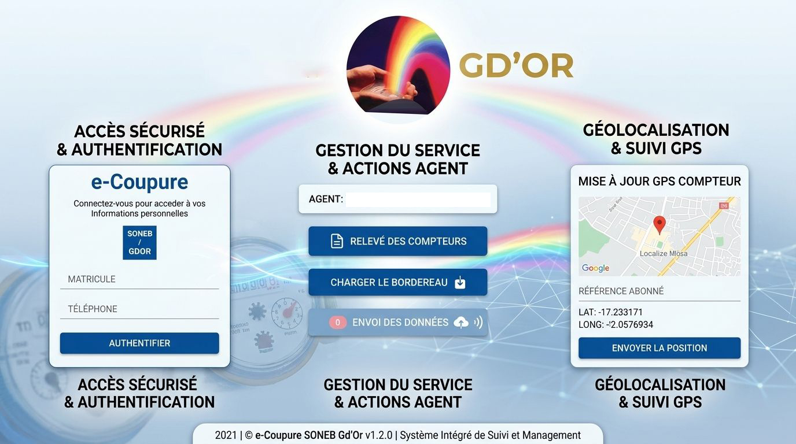
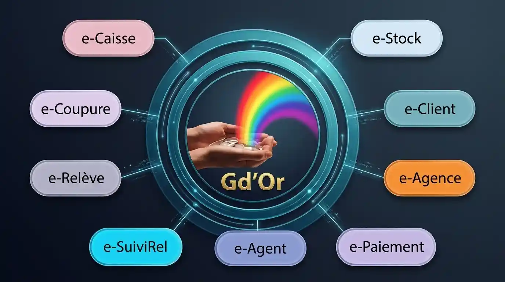

Gestion intelligente des opérations de coupure sur le terrain
e-Coupure est une solution mobile de la plateforme e-Major permettant aux agents de terrain de gérer efficacement les opérations de coupure des compteurs. Accessible sur mobile (Android, iOS) et desktop, elle facilite la transmission des informations en temps réel vers le système ERP Gd’Or Major.

Nouvelles technologies

Rapidité, précision et contrôle en temps réel